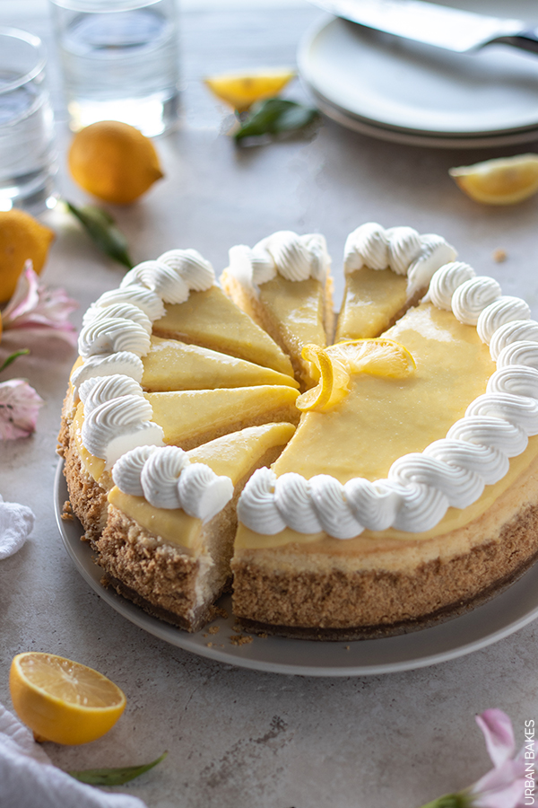
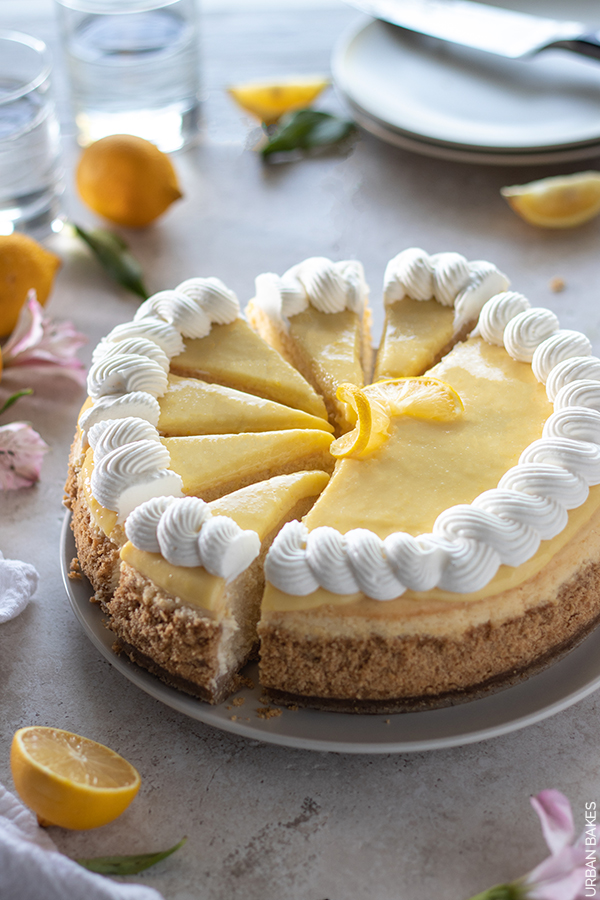

Cheesecake is a sweet dessert consisting of one or more layers. The main layer is made of a mixture of soft, fresh cheese, eggs and sugar. If there is a bottom layer, it often consists of a crust or base made from crushed cookies, graham crackers, pastry or sponge cake. Cheesecakes can be baked or unbaked (usually refrigerated).
Click here to visit the website with cheesecake recipes: Cooking Classy
The History of cheesecake
Cheesecake is believed to have originated in ancient Greece. The earliest recorded mention of a cheesecake was by the Greek physician Aegimus, who wrote a book on the art of making cheesecakes. Cheesecake was served to athletes during the first Olympic games held in 776 BC on the island of Delos.
When the Romans conquered Greece, they adopted the cheesecake recipe and spread it throughout their empire. The Romans added eggs and crushed cheese to the recipe, which made the cheesecake richer and creamier. They also introduced the use of honey as a sweetener.
During the Middle Ages, cheesecake recipes were influenced by the addition of various ingredients such as dried fruits, nuts and spices. In the 18th century, cream cheese was invented in the United States, which became a popular ingredient in cheesecake recipes.
Today, cheesecake is enjoyed worldwide and comes in many variations, including the following styles.
Types of cheesecake
- New York-style cheesecake
- Italian-style cheesecake
- Japanese-style cheesecake
- No-bake cheesecake
New York-style cheesecake is known for its rich, dense and creamy consistency, while Italian-style cheesecake is lighter and made with ricotta cheese. Japanese-style cheesecake is fluffy and soufflé-like and no-bake cheesecake is set in the refrigerator without baking.
Gallery
Here are the photos of popular flavored cheesecakes:
 

Popular flavors
- Classic
- Strawberry
- Chocolate
- Blueberry
- Lemon
Cheesecake can be made in a variety of flavors, with fruit, chocolate and other flavorings added to the cheese mixture. The possibilities are endless!